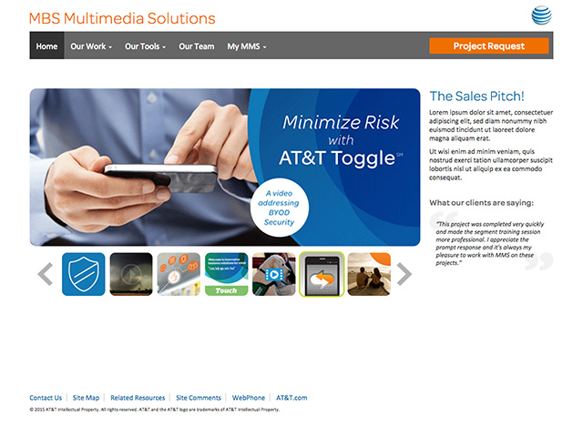

Portfolio
I’ve worn many different hats in my career, and usually play more than one role in a project. So rather than show you a boring series of screenshots, I’d prefer to tell the stories behind the projects. I’ve broken down my work into three main categories:

Web & Mobility
I’ve designed, built and supported dozens of sites for the nation’s largest telecom firm. I utilize modern web technologies such as HTML5, CSS3, Sass, JavaScript, jQuery, Bootstrap, and more. I’ve also designed and built mobile web apps to support major corporate events.